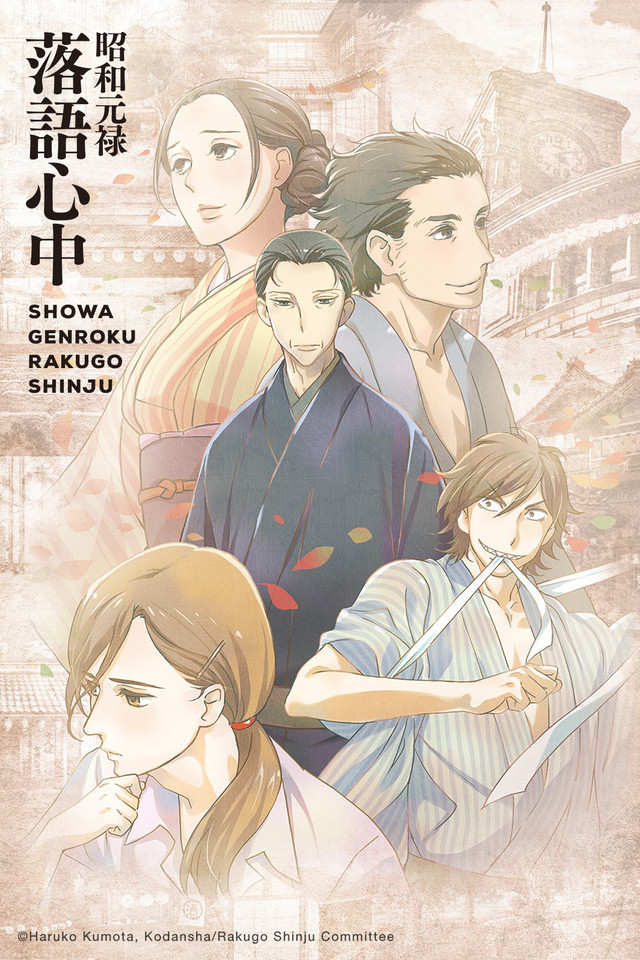
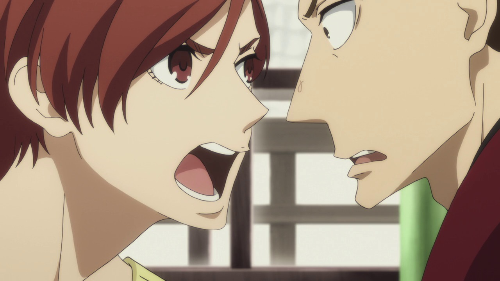
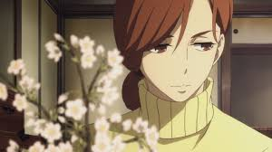

Showa Genroku Rakugo Shinju
Yotarou is a former yakuza member fresh out of prison and fixated on just one thing: rather than return to a life of crime, the young man aspires to take to the stage of Rakugo, a traditional Japanese form of comedic storytelling. Inspired during his incarceration by the performance of distinguished practitioner Yakumo Yuurakutei, he sets his mind on meeting the man who changed his life. After hearing Yotarou's desperate appeal for his mentorship, Yakumo is left with no choice but to accept his very first apprentice.

